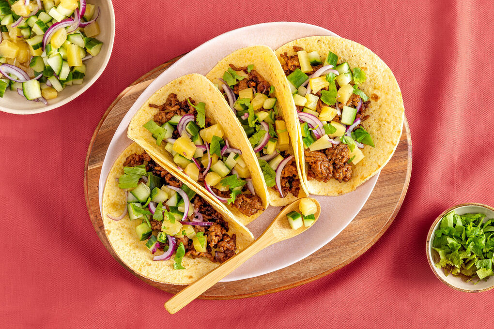

Taco's

Description
This slow cooker chicken tacos recipe is easy to make with just 3 ingredients for flavorful, super tender, shredded chicken. Spoon the chicken into warm tortillas for a very tasty meal any day of the week.
Ingredients
- 1 cup chicken broth
- 3 tablespoons taco seasoning mix
- 1 pound skinless, boneless chicken breasts
- Taco shells
- 3 avocado's
Steps
- Gather all ingredients.
- Combine chicken broth and taco seasoning mix in a bowl.
- Place chicken in a slow cooker. Pour chicken broth mixture over chicken.
- Cover slow cooker. Cook on Low for 6 to 8 hours. Shred chicken with two forks.
Home